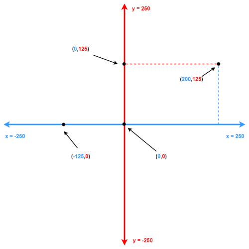
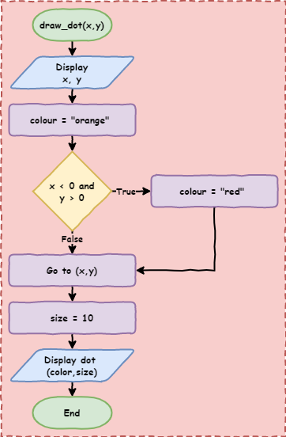

Python Turtle - Lesson 6¶
Part 1: Boolean logic¶
Boolean Introduction¶
In programming, Boolean means working with two possible values: True and False.
A Boolean variable can only store
TrueorFalseComparison operators (
==,!=,>,<,>=,<=) check something and give back eitherTrueorFalseBoolean operators (you will learn these soon) also give back either
TrueorFalse
The values True and False are special in Python.
If you type them into your code editor, they will look different (highlighted) to show they are important.
In Python, checking if something is True or False is called testing its truthiness.
When you compare two values, you are checking whether the statement is true or not.
Comparison operators¶
The conditions in if and while statements check if something is True or False.
They do this using comparison operators.
Let’s quickly review these.
There are six comparison operators you can use.
Create a new file called lesson_6_pt_1.py and type in the code below.
1print("jeff" == "jeff") # equal to
2print(1 != 1) # not equal to
3print(500 > 300) # greater than
4print(100 >= 250) # greater than or equal to
5print("a" < "q") # less than
6print(-30 <= 3) # less than or equal to
Predict and Run
Predict what the six results will be (hint: each one will be either
TrueorFalse)Run your code and check if your predictions were correct
Modify
Try changing the values in each comparison to make the result switch.
If a line gives
True, change the values so it givesFalseIf a line gives
False, change the values so it givesTrue
It does not matter if the values are written directly (like numbers in the code) or stored in a variable — the result will still work the same way.
Change your code so it matches the code below.
1score = 10
2print(score > 5)
Predict and Run
Predict whether the code will print
TrueorFalseRun the code and check if you were correct
Boolean Operations¶
You can also do operations using Boolean values by using Boolean operators.
These work a bit like maths, but instead of numbers, they use True and False.
The result will always be either True or False.
They are useful when you want to check more than one condition at the same time.
There are three Boolean operators:
andornot
The not operator¶
The easiest operator to understand is not.
It simply flips the value:
not TruebecomesFalsenot FalsebecomesTrue
Change your code so it matches the code below.
1print("not True is:", not True)
2print("not False:", not False)
Predict and Run
Predict what you think will be printed in the Shell when you run the code
Run the code and check if your prediction was correct
The and operator¶
The and and or operators are a bit more tricky.
The and operator will only return True if every value is True.
Change your code so it matches the code below.
1print("True and True is:", True and True)
2print("True and False is:", True and False)
3print("False and True is:", False and True)
4print("False and False is:", False and False)
5print("True and True and True is:", True and True and True)
6print("True and True and False is:", True and True and False)
Predict and Run
Predict what you think will be printed in the Shell when you run the code
Run the code and check if your prediction was correct
Investigate - Code breakdown
Line 1:print("True and True is:", True and True)Both values are
Trueandchecks if everything is True → this isTrueIt prints:
True and True is: True
Line 2:print("True and False is:", True and False)One value is
Falseandneeds everything to beTrue, so this isFalseIt prints:
True and False is: False
Line 3:print("False and True is:", False and True)One value is
FalseNot everything is
True, so this isFalseIt prints:
False and True is: False
Line 4:print("False and False is:", False and False)Both values are
FalseNot everything is
True, so this isFalseIt prints:
False and False is: False
Line 5:print("True and True and True is:", True and True and True)All values are
TrueSo the result is
TrueIt prints:
True and True and True is: True
Line 6:print("True and True and False is:", True and True and False)One value is
FalseNot everything is
True, so this isFalseIt prints:
True and True and False is: False
The or operator¶
The or operator works in the opposite way to and.
The or operator will return True if at least one value is True.
Change your code so it matches the code below.
1print("True or True is:", True or True)
2print("True or False is:", True or False)
3print("False or True is:", False or True)
4print("False or False is:", False or False)
5print("True or True or True is:", True or True or True)
6print("True or False or False is:", True or False or False)
Predict and Run
Predict what you think will be printed in the Shell when you run the code
Run the code and check if your prediction was correct
Investigate - Code breakdown
Line 1:print("True or True is:", True or True)At least one value is
True(both are!)orreturnsTrueIt prints:
True or True is: True
Line 2:print("True or False is:", True or False)One value is
TrueorreturnsTrueIt prints:
True or False is: True
Line 3:print("False or True is:", False or True)One value is
TrueorreturnsTrueIt prints:
False or True is: True
Line 4:print("False or False is:", False or False)No values are
TrueorreturnsFalseIt prints:
False or False is: False
Line 5:print("True or True or True is:", True or True or True)All values are
TrueorreturnsTrueIt prints:
True or True or True is: True
Line 6:print("True or True or False is:", True or True or False)At least one value is
TrueorreturnsTrueIt prints:
True or True or False is: True
Using Boolean operators¶
So far, we have only used True and False with other True and False values.
That is not very useful on its own.
But remember, comparison operators give us True or False.
We can use Boolean operators to join multiple comparisons together.
This lets us build more complex conditions for our if and while statements.
Consider the following code:
1print(7 < 8 and "a" < "o")
Predict and Run
Predict what you think will be printed in the Shell when you run the code
Run the code and check if your prediction was correct
Investigate - Code breakdown
Line 1:print(7 < 8 and "a" < "o")first Python will complete the comparison operations from left to right
7 < 8returnsTrue"a" < "o"returnsTrue
the code is now:
print(True and True)True and TruereturnsTrue
Python prints
Trueto the Shell
Combining multiple comparison operations
When you use more than one comparison, you must have a comparison on both sides of the Boolean operator.
10 > 5 and 10 > 13Both sides are full comparisons
This is correct
10 > 5 and 13The second part (
13) is not a comparisonThis is not the same and will not work the way you expect
Part 2: Mouse input in Turtle¶
To help you understand Boolean logic better, we are going to try something new with Turtle.
So far, you have only typed input into the Shell. But Turtle can also take input from the mouse (and even the keyboard).
We will use the code below for this activity, but first we need to explore how it works.
Download lesson_6_pt_2.py file and save it in your lesson folder.
1import turtle
2
3## Prepare the windows and turtle ##
4def set_scene():
5 turtle.setup(800, 600)
6
7 ## Respond to mouse click (signal) ##
8 turtle.onscreenclick(draw_dot)
9
10 ## Set up the grid ##
11 my_ttl.speed(0)
12 for i in range(4):
13 my_ttl.forward(400)
14 my_ttl.back(400)
15 my_ttl.right(90)
16 my_ttl.penup()
17
18
19## Reaction to signal (slot) ##
20def draw_dot(x, y):
21 print(x, y)
22 color = "orange"
23 size = 10
24 my_ttl.goto(x, y)
25 my_ttl.dot(size, color)
26
27
28## Main Program
29my_ttl = turtle.Turtle()
30set_scene()
31my_ttl.hideturtle()
Predict and Run
Predict what you think will happen when you run the code (hint: you will need to click in the Turtle window)
Run the code and check if your prediction was correct
Investigate - Code breakdown
We will look at this code in three parts, in the order Python uses them.
Lines 29to31: the main part of the program
Line 29:my_ttl = turtle.Turtle()→ creates a Turtle object and names itmy_ttlLine 30:set_scene()→ runs theset_scene()functionLine 31:my_ttl.hideturtle()→ hides the turtle so you cannot see it
Lines 4to16: theset_scene()function
Line 4:def set_scene():creates a function called
set_scenethis function does not need any arguments
Line 5:turtle.setup(800, 600)→ makes a window that is800pixels wide and600pixels tallLine 8:turtle.onscreenclick(draw_dot)→ this part is newwhen the mouse is clicked in the Turtle window:
Python runs the
draw_dotfunctionPython also sends the
xandyposition of the mouse click to that function
Line 11:my_ttl.speed(0)→ a speed of0means the turtle moves instantly, so you do not see it movingLines 12to15: draw four lines out from(0, 0)to make four sections on the screenLine 16:penup()this stops the turtle drawing a line when it moves to the mouse click position
try commenting it out to see what changes
Lines 20to25: thedraw_dot()function
Line 20:def draw_dot(x, y):creates a function called
draw_dotit uses two arguments:
xandythese are sent from
line 8when the mouse is clickedturtle.onscreenclick()always sends the click position asxandy
Line 21: prints thexandyposition into the Shell so you can see where you clickedLine 22: stores"orange"in the variablecolorLine 23: stores10in the variablesizeLine 24: moves the turtle to thexandypositionLine 25:my_ttl.dot(size, color)→ draws a dot where the turtle is, using the size insizeand the colour incolor
Exercises¶
In this course, the exercises are the make part of the PRIMM model. Work through the following tasks and write your own code.
Right now, every dot is orange. In these exercises, the part of the screen you click in will decide the dot’s colour.
To do this, you will need to use:
if,elif, andelsestatementsBoolean comparisons
Boolean operators
You will also need to remember how Turtle coordinates work.

Exercise 1
Download lesson_6_ex_1.py file and save it in your lesson folder.
Follow the instructions in the comments from line 24 to line 42.
To help, here is the flowchart for the draw_dot function:

The starting code is shown below:
1import turtle
2
3## Prepare the windows and turtle ##
4def set_scene():
5 turtle.setup(800, 600)
6
7 ## Respond to mouse click (signal) ##
8 turtle.onscreenclick(draw_dot)
9
10 ## Set up the grid ##
11 my_ttl.speed(0)
12 for i in range(4):
13 my_ttl.forward(400)
14 my_ttl.back(400)
15 my_ttl.right(90)
16 my_ttl.penup()
17
18
19## Reaction to signal (slot) ##
20def draw_dot(x, y):
21 print(x, y)
22 color = "orange"
23
24 ##################################
25 ######## Answer goes here ########
26 ##################################
27 """ Part A
28 Use an 'if' statement to set the dot color to red
29 when the mouse clicks in the top right quadrant
30
31 You can determine the position using the variables
32 x and y
33
34 To change the colour of the dot to red, run the command
35
36 color = 'red'
37
38 """
39
40 ##################################
41 ##################################
42 ##################################
43
44 my_ttl.goto(x, y)
45 size = 10
46 my_ttl.dot(size, color)
47
48
49my_ttl = turtle.Turtle()
50set_scene()
51my_ttl.hideturtle()
Exercise 2
Download lesson_6_ex_2.py file and save it in your lesson folder.
Follow the instructions in the comments from line 24 to line 35.
The starting code is shown below:
1import turtle
2
3## Prepare the windows and turtle ##
4def set_scene():
5 turtle.setup(800, 600)
6
7 ## Respond to mouse click (signal) ##
8 turtle.onscreenclick(draw_dot)
9
10 ## Set up the grid ##
11 my_ttl.speed(0)
12 for i in range(4):
13 my_ttl.forward(400)
14 my_ttl.back(400)
15 my_ttl.right(90)
16 my_ttl.penup()
17
18
19## Reaction to signal (slot) ##
20def draw_dot(x, y):
21 print(x, y)
22 color = "orange"
23
24 ##################################
25 ######## Answer goes here ########
26 ##################################
27 """ Part B
28 Use both 'if' and 'else' to set the dot color to red
29 if the mouse is clicked in the top right quadrant and
30 green if clicked anywhere else
31 """
32
33 ##################################
34 ##################################
35 ##################################
36
37 my_ttl.goto(x, y)
38 size = 10
39 my_ttl.dot(size, color)
40
41
42my_ttl = turtle.Turtle()
43set_scene()
44my_ttl.hideturtle()
Exercise 3
Download lesson_6_ex_3.py file and save it in your lesson folder.
Follow the instructions in the comments from line 24 to line 36.
The starting code is shown below:
1import turtle
2
3## Prepare the windows and turtle ##
4def set_scene():
5 turtle.setup(800, 600)
6
7 ## Respond to mouse click (signal) ##
8 turtle.onscreenclick(draw_dot)
9
10 ## Set up the grid ##
11 my_ttl.speed(0)
12 for i in range(4):
13 my_ttl.forward(400)
14 my_ttl.back(400)
15 my_ttl.right(90)
16 my_ttl.penup()
17
18
19## Reaction to signal (slot) ##
20def draw_dot(x, y):
21 print(x, y)
22 color = "orange"
23
24 ##################################
25 ######## Answer goes here ########
26 ##################################
27 """ Part C
28 Use 'if', 'elif' and 'else' keywords to set the dot color to
29 red when the mouse is clicked in the top right quadrant,
30 blue in the top left quadrant, yellow in the bottom left quadrant
31 and green in the bottom right quadrant
32 """
33
34 ##################################
35 ##################################
36 ##################################
37
38 my_ttl.goto(x, y)
39 size = 10
40 my_ttl.dot(size, color)
41
42
43my_ttl = turtle.Turtle()
44set_scene()
45my_ttl.hideturtle()